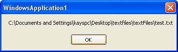

Select a File from the Open File Dialogue Box
This tutorial is part of an ongoing lesson. Click here for the first part.
You'll notice from the previous section that if you select a file and click the Open button, nothing happens. That's because the Open dialogue boxes doesn't actually open files! It only displays a list of files that CAN be opened, if you were clever enough to write the code. We'll be writing the code that does the opening (and the saving) in a later section. But you need to be able to get the name of the file. The Open Dialogue box has a property that returns the file name that was selected. Not surprisingly, it's called FileName:
OpenFD.FileName
However, this is a property that returns a value (a string value). The value is the name of a file. So you have to assign this value to something. We can assign it to a new variable:
Dim strFileName As String
strFileName = OpenFD.FileName
The value in the variable strFileName will then hold the name of the file selected. So change you code to this (new lines in bold):
Dim strFileName As String
openFD.InitialDirectory = "C:\"
openFD.Title = "Open a Text File"
openFD.Filter = "Text Files|*.txt"
openFD.ShowDialog()
strFileName = OpenFD.FileName
MessageBox.Show( strFileName )
Run your programme, and click your File > Open menu. Navigate to where you have some text files. Click one to select it. Then click the Open button. You should see the name of the file displayed in your message box:

Notice that the location (the path) of the file is also displayed.
One thing you may have noticed is that if you select a file, then click the Cancel button, the message box still displays. But it will be blank, or just say OpenFileDialog1. In your code, you will only want to do something with a file if the Cancel button is NOT clicked.
You can test to see if it was clicked by assigning the openFD.ShowDialog() to an integer:
Dim DidWork As Integer = openFD.ShowDialog()
You can then test what is inside of the DidWork variable. If the cancel button is clicked, the result of the action is stored by VB.NET in this property:
DialogResult.Cancel
You can compare the two in an if statement:
If DidWork = DialogResult.Cancel Then
MsgBox("Cancel Button Clicked")
Else
strFileName = openFD.FileName
MsgBox(strFileName)
End If
In the code above, you're only opening the file if the Open button was clicked. The code is a bit more complicated, but study it for a while and it will make sense!
In the next part, we'll take a look at how to code for the Save menu.